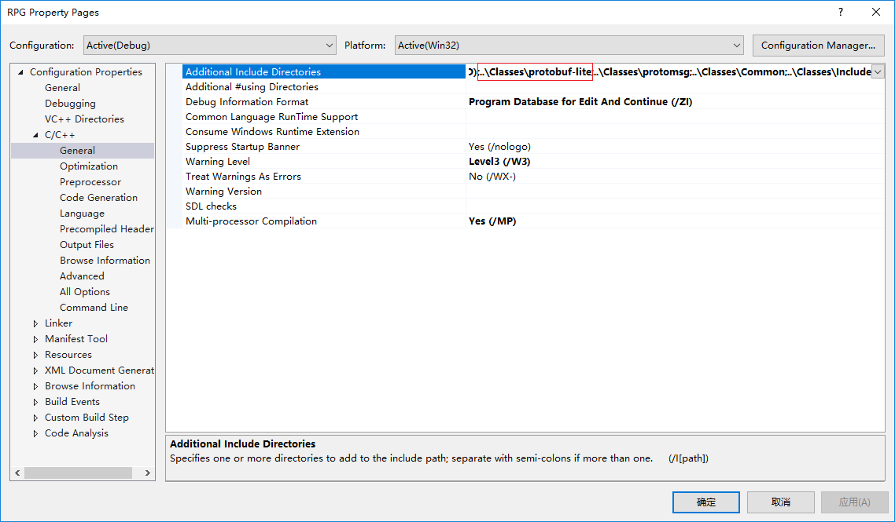
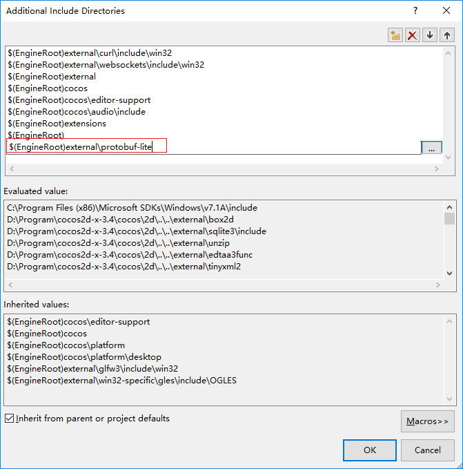
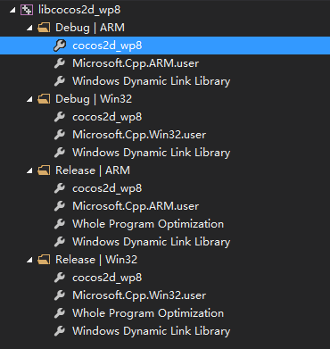
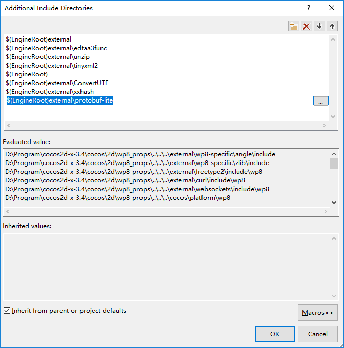
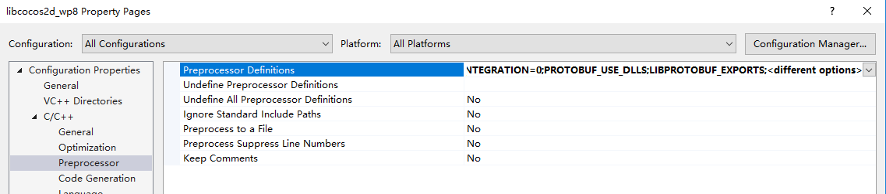

准备工作
- Cocos2dx 3.x以上版本（以3.4版本为例）
- protobuf 2.6.1（release页）
提取protobuf-lite源文件
protobuf源代码包中包含VS项目文件（protobuf-2.6.1\vsprojects\），可以通过打开protobuf.sln查看libprotobuf-lite依赖的文件，也可以用文本编辑器打开libprotobuf-lite.vcxproj查看，如下：1
2
3
4
5
6
7
8
9
10
11
12
13
14
15
16
17
18
19
20
21
22
23
24
25
26
27
28
29
30
31
32
33
34
35
36
37
38<ItemGroup>
<ClInclude Include="..\src\google\protobuf\extension_set.h" />
<ClInclude Include="..\src\google\protobuf\generated_message_util.h" />
<ClInclude Include="..\src\google\protobuf\io\coded_stream.h" />
<ClInclude Include="..\src\google\protobuf\io\coded_stream_inl.h" />
<ClInclude Include="..\src\google\protobuf\io\zero_copy_stream.h" />
<ClInclude Include="..\src\google\protobuf\io\zero_copy_stream_impl_lite.h" />
<ClInclude Include="..\src\google\protobuf\message_lite.h" />
<ClInclude Include="..\src\google\protobuf\repeated_field.h" />
<ClInclude Include="..\src\google\protobuf\stubs\atomicops.h" />
<ClInclude Include="..\src\google\protobuf\stubs\atomicops_internals_x86_msvc.h" />
<ClInclude Include="..\src\google\protobuf\stubs\common.h" />
<ClInclude Include="..\src\google\protobuf\stubs\hash.h" />
<ClInclude Include="..\src\google\protobuf\stubs\map-util.h" />
<ClInclude Include="..\src\google\protobuf\stubs\once.h" />
<ClInclude Include="..\src\google\protobuf\stubs\platform_macros.h" />
<ClInclude Include="..\src\google\protobuf\stubs\stl_util.h" />
<ClInclude Include="..\src\google\protobuf\stubs\stringprintf.h" />
<ClInclude Include="..\src\google\protobuf\stubs\template_util.h" />
<ClInclude Include="..\src\google\protobuf\stubs\type_traits.h" />
<ClInclude Include="..\src\google\protobuf\wire_format_lite.h" />
<ClInclude Include="..\src\google\protobuf\wire_format_lite_inl.h" />
<ClInclude Include="config.h" />
</ItemGroup>
<ItemGroup>
<ClCompile Include="..\src\google\protobuf\extension_set.cc" />
<ClCompile Include="..\src\google\protobuf\generated_message_util.cc" />
<ClCompile Include="..\src\google\protobuf\io\coded_stream.cc" />
<ClCompile Include="..\src\google\protobuf\io\zero_copy_stream.cc" />
<ClCompile Include="..\src\google\protobuf\io\zero_copy_stream_impl_lite.cc" />
<ClCompile Include="..\src\google\protobuf\message_lite.cc" />
<ClCompile Include="..\src\google\protobuf\repeated_field.cc" />
<ClCompile Include="..\src\google\protobuf\stubs\atomicops_internals_x86_msvc.cc" />
<ClCompile Include="..\src\google\protobuf\stubs\common.cc" />
<ClCompile Include="..\src\google\protobuf\stubs\once.cc" />
<ClCompile Include="..\src\google\protobuf\stubs\stringprintf.cc" />
<ClCompile Include="..\src\google\protobuf\wire_format_lite.cc" />
</ItemGroup>
跟随项目编译（添加到Classes）
将以上列出的文件拷贝到创建好的cocos2dx项目下的Classes目录，另外还需要拷贝vsprojects目录下的config.h到Classes目录，拷贝时注意保留文件夹层次结构。拷贝之后Classes文件夹下的文件层次结构如下：1
2
3
4
5
6
7
8
9
10
11
12
13
14
15
16
17
18
19
20
21
22
23
24
25
26
27
28
29
30
31
32
33
34
35
36
37
38
39
40
41
42
43
44
45
46
47
48
49─protobuf-lite <- 上层文件夹名称可以自定
│ │ config.h <- protobuf-2.6.1/vsprojects/config.h
│ │
│ └─google
│ └─protobuf
│ │ extension_set.cc
│ │ extension_set.h
│ │ generated_message_util.cc
│ │ generated_message_util.h
│ │ message_lite.cc
│ │ message_lite.h
│ │ repeated_field.cc
│ │ repeated_field.h
│ │ wire_format_lite.cc
│ │ wire_format_lite.h
│ │ wire_format_lite_inl.h
│ │
│ ├─io
│ │ coded_stream.cc
│ │ coded_stream.h
│ │ coded_stream_inl.h
│ │ zero_copy_stream.cc
│ │ zero_copy_stream.h
│ │ zero_copy_stream_impl.h
│ │ zero_copy_stream_impl_lite.cc
│ │ zero_copy_stream_impl_lite.h
│ │
│ └─stubs
│ atomicops.h
│ atomicops_internals_arm_gcc.h
│ atomicops_internals_atomicword_compat.h
│ atomicops_internals_generic_gcc.h
│ atomicops_internals_macosx.h
│ atomicops_internals_x86_gcc.cc
│ atomicops_internals_x86_gcc.h
│ atomicops_internals_x86_msvc.cc
│ atomicops_internals_x86_msvc.h
│ common.cc
│ common.h
│ hash.h
│ map_util.h
│ once.cc
│ once.h
│ platform_macros.h
│ stl_util.h
│ stringprintf.cc
│ stringprintf.h
│ template_util.h
│ type_traits.h
接下来需要对不同平台项目做相应修改。
win32项目
用VS打开proj.win32下的sln文件，添加刚刚拷贝的protobuf-lite源文件到项目中（tip：可以直接在资源管理器中将protobuf-lite文件夹拖放到筛选器上，VS会自动将文件夹以及子文件夹下的所有文件添加到筛选器）。之后修改项目属性，添加protobuf-lite文件夹相对路径到附加包含目录，如下图：

现在可以开始编译了，稍等一会就可以跑起来了。
wp8项目
用VS打开proj.wp8下的sln文件，将拷贝的protobuf-lite源文件添加到项目中。之后添加protobuf-lite文件夹相对路径到附加包含目录，添加完成后先尝试编译，会发现有一系列的报错：1
2
3
4
5
6
7
8
9
10
11
12
13
14
15
16
17
18
19
20
21
22
23
24
252> extension_set.cc
2>..\..\Classes\protobuf-lite\google\protobuf\extension_set.cc(312): error C2059: syntax error : ')'
2>..\..\Classes\protobuf-lite\google\protobuf\extension_set.cc(313): error C2059: syntax error : ')'
2>..\..\Classes\protobuf-lite\google\protobuf\extension_set.cc(314): error C2059: syntax error : ')'
2>..\..\Classes\protobuf-lite\google\protobuf\extension_set.cc(315): error C2059: syntax error : ')'
2>..\..\Classes\protobuf-lite\google\protobuf\extension_set.cc(316): error C2059: syntax error : ')'
2>..\..\Classes\protobuf-lite\google\protobuf\extension_set.cc(317): error C2059: syntax error : ')'
2>..\..\Classes\protobuf-lite\google\protobuf\extension_set.cc(318): error C2059: syntax error : ')'
2>..\..\Classes\protobuf-lite\google\protobuf\extension_set.cc(405): error C2059: syntax error : ')'
2>..\..\Classes\protobuf-lite\google\protobuf\extension_set.cc(418): error C2059: syntax error : ')'
2>..\..\Classes\protobuf-lite\google\protobuf\extension_set.cc(427): error C2059: syntax error : ')'
2>..\..\Classes\protobuf-lite\google\protobuf\extension_set.cc(434): error C2059: syntax error : ')'
2>..\..\Classes\protobuf-lite\google\protobuf\extension_set.cc(449): error C2059: syntax error : ')'
2>..\..\Classes\protobuf-lite\google\protobuf\extension_set.cc(465): error C2059: syntax error : ')'
2>..\..\Classes\protobuf-lite\google\protobuf\extension_set.cc(479): error C2059: syntax error : ')'
2>..\..\Classes\protobuf-lite\google\protobuf\extension_set.cc(488): error C2059: syntax error : ')'
2>..\..\Classes\protobuf-lite\google\protobuf\extension_set.cc(495): error C2059: syntax error : ')'
2>..\..\Classes\protobuf-lite\google\protobuf\extension_set.cc(509): error C2059: syntax error : ')'
2>..\..\Classes\protobuf-lite\google\protobuf\extension_set.cc(524): error C2059: syntax error : ')'
2>..\..\Classes\protobuf-lite\google\protobuf\extension_set.cc(551): error C2059: syntax error : ')'
2>..\..\Classes\protobuf-lite\google\protobuf\extension_set.cc(581): error C2059: syntax error : ')'
2>..\..\Classes\protobuf-lite\google\protobuf\extension_set.cc(599): error C2059: syntax error : ')'
2>..\..\Classes\protobuf-lite\google\protobuf\extension_set.cc(620): error C2059: syntax error : ')'
2>..\..\Classes\protobuf-lite\google\protobuf\extension_set.cc(627): error C2059: syntax error : ')'
2>..\..\Classes\protobuf-lite\google\protobuf\extension_set.cc(642): error C2059: syntax error : ')'
报错的原因是OPTIONAL在c:\Program Files (x86)\Windows Phone Kits\8.0\Include\minwin\minwindef.h中已有宏定义，解决这些报错的办法是在OPTIONAL枚举定义前面添加以下代码：1
2
3
4
5
android项目
修改Classes\protobuf-lite\google目录下的config.h为以下内容（参考自Android NDK下编译google protocol buffer(protobuf)）：1
2
3
4
5
6
7
8
9
10
11
12
13
14
15
16
17
18
19
20
21
22
23
24
25
26
27
28
29
30
31
32
33
34
35
36
37
38
39
40
41
42
43
44/* protobuf config.h for MSVC. On other platforms, this is generated
* automatically by autoheader / autoconf / configure. */
/* the location of <hash_map> */
/* the namespace of hash_map/hash_set */
// Apparently Microsoft decided to move hash_map *back* to the std namespace
// in MSVC 2010:
// http://blogs.msdn.com/vcblog/archive/2009/05/25/stl-breaking-changes-in-visual-studio-2010-beta-1.aspx
// TODO(kenton): Use unordered_map instead, which is available in MSVC 2010.
/* the location of <hash_set> */
/* define if the compiler has hash_map */
/* define if the compiler has hash_set */
/* define if you want to use zlib. See readme.txt for additional
* requirements. */
// #define HAVE_ZLIB 1
/* the location of <hash_map> */
/* the location of <hash_set> */
跟随libcocos2d编译（添加到external）
拷贝protobuf-lite文件夹到Cocos2dxRoot\external目录下（Cocos2dxRoot为Cocos2dx的安装目录，下同），接下来需要根据不同平台项目修改模板，修改之前建议做好备份。
win32
使用VS打开Cocos2dxRoot\cocos\2d目录下的libcocos2d.vcxproj文件，展开external筛选器，新建一个筛选器protobuf-lite，并将拷贝的protobuf-lite文件夹拖放到这个筛选器上。之后打开项目属性，在C/C++下的附加包含目录中添加protobuf-lite相对路径（$(EngineRoot)external\protobuf-lite）：

最后保存修改，注意退出VS时会提示是否保存sln文件，不保存即可。
wp8
步骤与win32项目类似，使用VS打开Cocos2dxRoot\cocos\2d目录下的libcocos2d_wp8.vcxproj文件，展开libcocos2d_wp8项目下的external筛选器，新建protobuf-lite筛选器并添加拷贝的文件到该筛选器。之后在属性管理器（可以通过View（视图）->Other Window（其他窗口）->Property Manager（属性管理器）打开属性管理器标签页）中展开libcocos2d_wp8项目下的任意一个配置（例如：Debug|ARM），选中cocos2d_wp8，如下图：

右键cocos2d_wp8打开属性页，在C/C++下的附加包含目录中添加protobuf-lite相对路径（$(EngineRoot)external\protobuf-lite）：

展开C/C++选项，点击Preprocessor，在Preprocessor Definitions（宏定义）中添加PROTOBUF_USE_DLLS和LIBPROTOBUF_EXPORTS：

操作完成后保存修改并退出，退出时可能会有保存用户属性表的提示，选择是，另外可能还有保存sln文件的提示，不保存即可。
android
参考Cocos2dxRoot\external\flatbuffers下的Android.mk，为protobuf-lite新建一个Android.mk，如下内容：1
2
3
4
5
6
7
8
9
10
11
12
13
14
15
16
17
18
19
20
21
22
23
24
25
26
27
28
29LOCAL_PATH := $(call my-dir)
include $(CLEAR_VARS)
LOCAL_MODULE := protobuf_static
LOCAL_MODULE_FILENAME := protobuf-lite
LOCAL_SRC_FILES := google/protobuf/extension_set.cc \
google/protobuf/generated_message_util.cc \
google/protobuf/io/coded_stream.cc \
google/protobuf/io/zero_copy_stream.cc \
google/protobuf/io/zero_copy_stream_impl_lite.cc \
google/protobuf/message_lite.cc \
google/protobuf/repeated_field.cc \
google/protobuf/stubs/atomicops_internals_x86_gcc.cc \
google/protobuf/stubs/atomicops_internals_x86_msvc.cc \
google/protobuf/stubs/common.cc \
google/protobuf/stubs/once.cc \
google/protobuf/stubs/stringprintf.cc \
google/protobuf/wire_format_lite.cc
LOCAL_EXPORT_C_INCLUDES := $(LOCAL_PATH)/..
LOCAL_C_INCLUDES := $(LOCAL_PATH)/..\
LOCAL_CFLAGS := -DGOOGLE_PROTOBUF_NO_RTTI
include $(BUILD_STATIC_LIBRARY)
之后修改Cocos2dxRoot\templates下的cocos2dx_files.json，在末尾添加protobuf-lite源文件相对路径，如下内容：1
2
3
4
5
6
7
8
9
10
11
12
13
14
15
16
17
18
19
20
21
22
23
24
25
26
27
28
29
30
31
32
33
34
35
36
37
38
39
40
41
42"external/protobuf-lite/config.h",
"external/protobuf-lite/Android.mk",
"external/protobuf-lite/google/protobuf/extension_set.h",
"external/protobuf-lite/google/protobuf/generated_message_util.h",
"external/protobuf-lite/google/protobuf/io/coded_stream.h",
"external/protobuf-lite/google/protobuf/io/coded_stream_inl.h",
"external/protobuf-lite/google/protobuf/io/zero_copy_stream.h",
"external/protobuf-lite/google/protobuf/io/zero_copy_stream_impl.h",
"external/protobuf-lite/google/protobuf/io/zero_copy_stream_impl_lite.h",
"external/protobuf-lite/google/protobuf/message_lite.h",
"external/protobuf-lite/google/protobuf/repeated_field.h",
"external/protobuf-lite/google/protobuf/stubs/atomicops.h",
"external/protobuf-lite/google/protobuf/stubs/atomicops_internals_arm_gcc.h",
"external/protobuf-lite/google/protobuf/stubs/atomicops_internals_atomicword_compat.h",
"external/protobuf-lite/google/protobuf/stubs/atomicops_internals_generic_gcc.h",
"external/protobuf-lite/google/protobuf/stubs/atomicops_internals_macosx.h",
"external/protobuf-lite/google/protobuf/stubs/atomicops_internals_x86_gcc.h",
"external/protobuf-lite/google/protobuf/stubs/atomicops_internals_x86_msvc.h",
"external/protobuf-lite/google/protobuf/stubs/common.h",
"external/protobuf-lite/google/protobuf/stubs/hash.h",
"external/protobuf-lite/google/protobuf/stubs/map_util.h",
"external/protobuf-lite/google/protobuf/stubs/once.h",
"external/protobuf-lite/google/protobuf/stubs/platform_macros.h",
"external/protobuf-lite/google/protobuf/stubs/stl_util.h",
"external/protobuf-lite/google/protobuf/stubs/stringprintf.h",
"external/protobuf-lite/google/protobuf/stubs/template_util.h",
"external/protobuf-lite/google/protobuf/stubs/type_traits.h",
"external/protobuf-lite/google/protobuf/wire_format_lite.h",
"external/protobuf-lite/google/protobuf/wire_format_lite_inl.h",
"external/protobuf-lite/google/protobuf/extension_set.cc",
"external/protobuf-lite/google/protobuf/generated_message_util.cc",
"external/protobuf-lite/google/protobuf/io/coded_stream.cc",
"external/protobuf-lite/google/protobuf/io/zero_copy_stream.cc",
"external/protobuf-lite/google/protobuf/io/zero_copy_stream_impl_lite.cc",
"external/protobuf-lite/google/protobuf/message_lite.cc",
"external/protobuf-lite/google/protobuf/repeated_field.cc",
"external/protobuf-lite/google/protobuf/stubs/atomicops_internals_x86_gcc.cc",
"external/protobuf-lite/google/protobuf/stubs/atomicops_internals_x86_msvc.cc",
"external/protobuf-lite/google/protobuf/stubs/common.cc",
"external/protobuf-lite/google/protobuf/stubs/once.cc",
"external/protobuf-lite/google/protobuf/stubs/stringprintf.cc",
"external/protobuf-lite/google/protobuf/wire_format_lite.cc",
补充
如果项目要用到protobuf，还需做如下修改：
- win32主项目
YourProject（即创建的项目名称）添加protobuf-lite目录（$(EngineRoot)external\protobuf-lite）到附加包含目录 - wp8项目
YourProjectComponent添加protobuf-lite目录（$(EngineRoot)external\protobuf-lite）到附加包含目录 - android项目修改
Android.mk，修改后的内容参考：1
2
3
4
5
6
7
8
9
10
11
12
13
14
15
16
17
18
19
20
21
22
23
24
25
26
27
28
29
30
31
32
33
34
35
36LOCAL_PATH := $(call my-dir)
include $(CLEAR_VARS)
$(call import-add-path,$(LOCAL_PATH)/../../cocos2d)
$(call import-add-path,$(LOCAL_PATH)/../../cocos2d/external)
$(call import-add-path,$(LOCAL_PATH)/../../cocos2d/cocos)
LOCAL_MODULE := cocos2dcpp_shared
LOCAL_MODULE_FILENAME := libcocos2dcpp
LOCAL_SRC_FILES := hellocpp/main.cpp \
../../Classes/AppDelegate.cpp \
../../Classes/HelloWorldScene.cpp \
../../Classes/test.pb.cc
LOCAL_C_INCLUDES := $(LOCAL_PATH)/../../Classes \
$(LOCAL_PATH)/../../cocos2d/external/protobuf-lite
# _COCOS_HEADER_ANDROID_BEGIN
# _COCOS_HEADER_ANDROID_END
LOCAL_STATIC_LIBRARIES := cocos2dx_static
LOCAL_STATIC_LIBRARIES += protobuf_static
# _COCOS_LIB_ANDROID_BEGIN
# _COCOS_LIB_ANDROID_END
include $(BUILD_SHARED_LIBRARY)
$(call import-module,.)
$(call import-module,protobuf-lite)
# _COCOS_LIB_IMPORT_ANDROID_BEGIN
# _COCOS_LIB_IMPORT_ANDROID_END